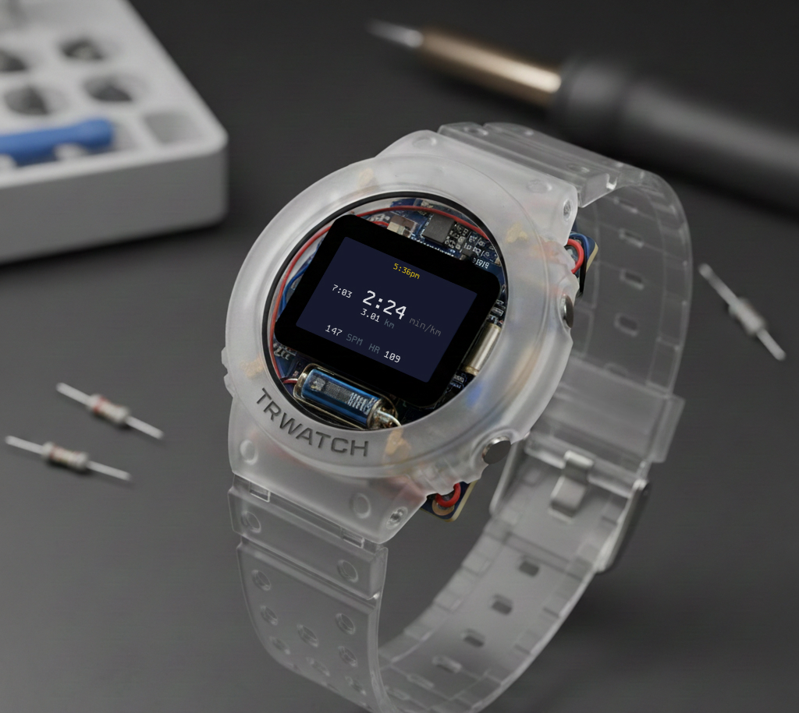

NEXT
Moto Digital Dash
The same glanceability discipline, scaled up to a motorcycle dashboard.
W·02 — Case study · Wearable UI · 2025 · status: prototype exists
A simple, familiar text user interface designed to operate without visual or cognitive overload — for hikers who don't want to fiddle with their wrist mid-trail.

Trek uses a minimal TUI navigated with two push buttons and a crown that also functions as a button. The system runs on minimal compute, consumes ultra-low power, and remains fully user-customisable — without touch, without gestures, without staring at a screen full of icons.
Show the essentials; hide everything else until it's asked for.
Positioned on the eastern edge at the equator of the case. Its diameter and groove profile are optimised for bare fingers or thick gloves. Clockwise and anti-clockwise rotations map to context-aware actions — menu navigation or value adjustment.
The crown protrudes just enough to be intentionally pressable, without becoming a structural failure point under impact or shear forces.
Trek uses three physical inputs in total, each supporting three press types — which means nine instantly accessible actions:
Every interaction resolves through the same short chain. Nothing hides more than one layer deep, because depth is expensive when your hands are cold and the light is failing.
Every interaction must be discoverable, reversible, and usable under stress, motion or poor conditions. No gestures. No hidden states. No accidental inputs.
The interface disappears when it isn't needed and responds instantly when it is. More updates land here as the prototype matures.
The TUI runs in your browser as an emulator of the 128×64 blue-OLED module — buttons included.
NEXT
The same glanceability discipline, scaled up to a motorcycle dashboard.